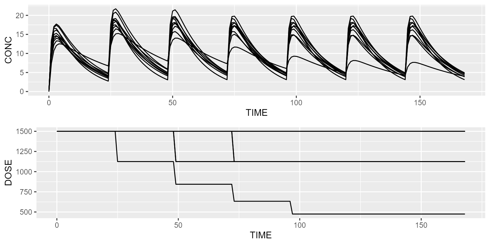

This vignette shows how interruption events can be implemented.
Dose adaptation based on Ctrough value
As a first example of dose adaptation, we’re going to adapt the dose
based on Ctrough. Say we’d like Ctrough not to
exceed an arbitrary safety limit of 5 mg/L. The rule could be as
follows: if Ctrough is greater than 5, multiply the last
dose by 0.75, otherwise continue with the same dose. Let’s illustrate
this simple rule using events. We will use the first compartment model
with absorption from the model library for this purpose.
model <- model_suite$nonmem$advan2_trans2
dataset <- Dataset(10) %>%
add(Observations(times=0:168)) %>%
add(EventCovariate("DOSE", 1500))
events <- Events()
event1 <- Event(name="Dose adaptation", times=seq(0, 144, by=24), fun=function(inits) {
inits$DOSE <- ifelse(inits$CONC > 5, inits$DOSE*0.75, inits$DOSE)
inits$A_DEPOT <- inits$A_DEPOT + inits$DOSE
return(inits)
})
events <- events %>% add(event1)
results <- model %>% simulate(dataset, events=events, seed=1, outvars="DOSE")
gridExtra::grid.arrange(spaghettiPlot(results, "CONC"), spaghettiPlot(results, "DOSE"), ncol=1)